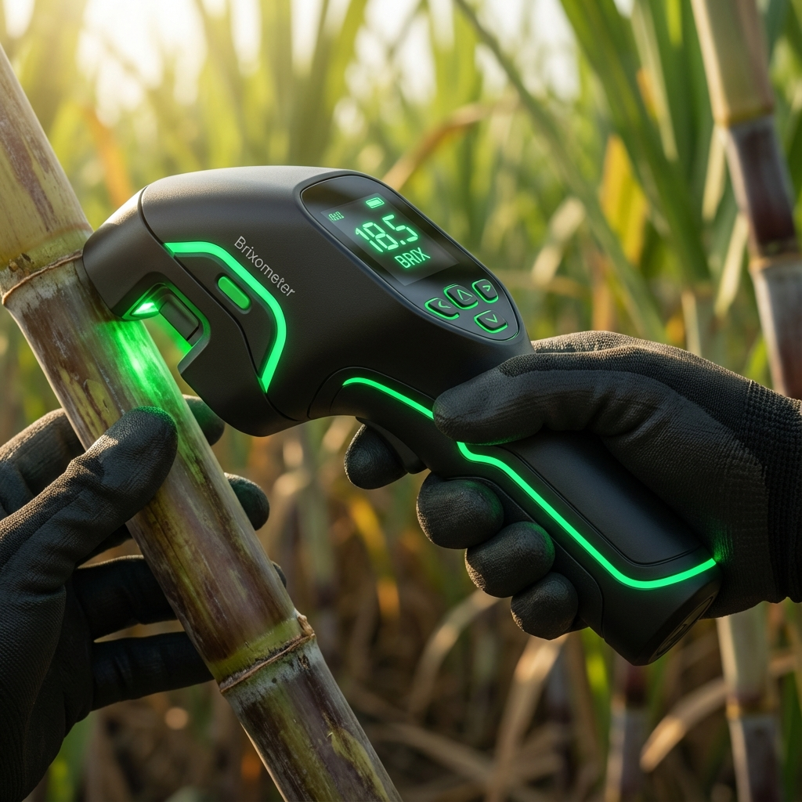

Predict optimal sugarcane maturity using NIR + cross‑polar imaging + AI-driven conformal prediction.

The sugarcane supply chain suffers from inefficiency at both the farm and the mill.
Of farmers rely on visual inspection ("knocking" on cane), leading to inaccurate judgments.
Dispute rate between farmers and mills due to non-transparent quality assessment.
A ground-up hardware and AI solution designed for rugged field use.
The only system providing uncertainty-calibrated badges for immediate decision making.
Seamless integration from farm to mill.
Component procurement, sensor interfacing (I2C/SPI), basic enclosure printing.
Data collection (200 stems), ML model training, feature extraction pipeline.
Field trials, conformal calibration, mill-side integration pilot.
Production engineering, injection molding, extensive field deployment.
Brixometer bridges the gap between lab-grade accuracy and field-level usability.